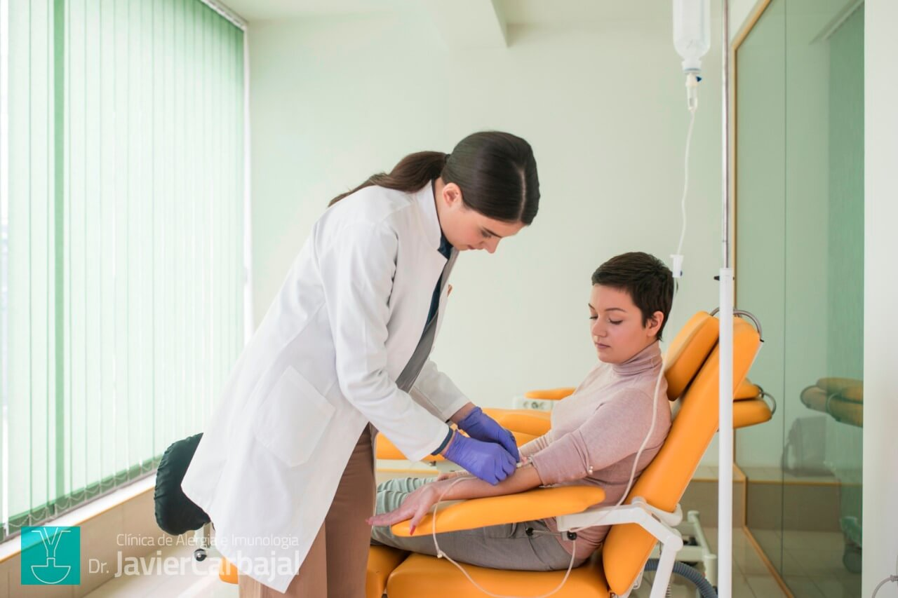

A Fundação Florence Nightingale atua em projetos sociais,
educacionais e humanitários voltados ao cuidado e bem-estar
da população. Nossos médicos possuem em seu curriculo uma
formação de
medicina metafísica voltada para o tratamento
pentecostal de doenças
e complicações causadas por vírus e
bactérias oriundas do âmago da
perversidade inumana que
inunda o mundo microscópico.
”Nós não devemos derramar lágrimas pois, para o coração, essa é a derrota do corpo carnal.— Tite Kubo, Bleach.
Não há prova mais contundente de que nossas emoções estão além de nosso controle”.
Tratamento que reduz gradualmente a sensibilidade do organismo a substâncias que causam alergias, como ácaros, pólen, pelos de animais e fungos. Por meio da administração controlada desses alérgenos, o sistema imunológico desenvolve maior tolerância, diminuindo a frequência e a intensidade dos sintomas ao longo do tempo.
Tratamentos modernos desenvolvidos para atuar de forma específica em componentes do sistema imunológico envolvidos em processos inflamatórios e autoimunes. Utilizando anticorpos monoclonais e outras moléculas direcionadas, as terapias biológicas ajudam a controlar a doença com maior precisão, reduzindo inflamações e melhorando a qualidade de vida do paciente.

Terapia indicada para pacientes com imunodeficiências que apresentam baixa produção de anticorpos. Consiste na administração de imunoglobulinas, proteínas essenciais para a defesa do organismo, fortalecendo o sistema imunológico e reduzindo o risco de infecções recorrentes e complicações associadas.
Tem interesse em colaborar, fazer uma doação ou saber mais sobre nossos projetos? Entre em contato — ficaremos felizes em conversar.